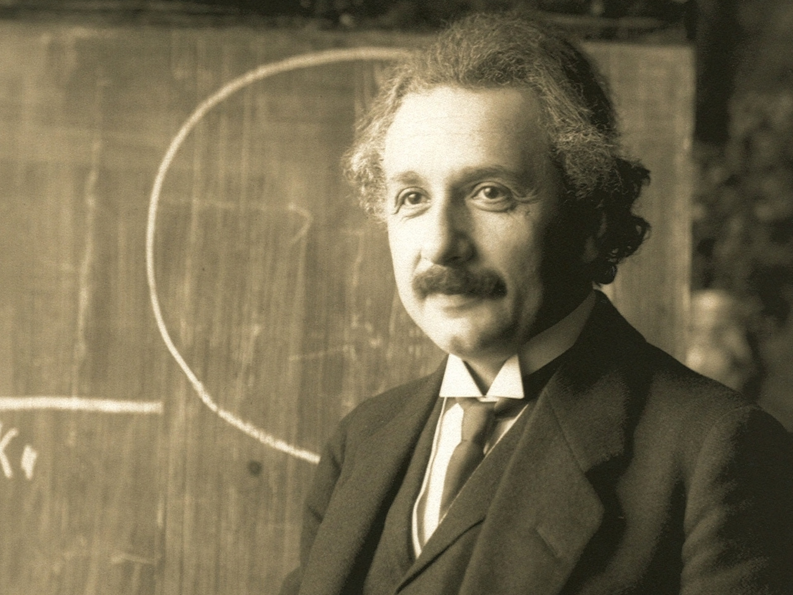

Albert Einstein
One of the most brilliant scientists in history

Einstein in 1921
Timeline of Albert Einstein
- 1879: Albert Einstein is born in Ulm, Germany
- 1880: The family move to Munich
- 1884: When he was only five years old his father showed Albert a pocket compass and he was fascinated by the thought that something unseen was moving the needle
- 1885 - 1888: Albert attended a Catholic elementary school in Munich, from the age of five, for three years
- 1889: Albert Einstein is introduced to a family friend called Max Talmud who introduced the boy to books on science and mathematics. Albert starts his quest for facts and information available about the sciences. He attends the Luitpold-Gymnasium in Munich for the next six years
- 1894: Due to financial reasons the Einstein family move from Munich to Pavia, Italy. Albert is left in Munich to finish his studies but soon decides to follow the family to Italy
- 1895: He is sent to the Swiss town of Aarau to finish high school
- 1896: Albert graduates from high school at the age of 17 and enrols at the ETH (the Federal Polytechnic) in Zurich. He renounces his German citizenship
- 1900: Einstein graduates in 1900 from ETH with a degree in physics
- 1901: Albert Einstein acquires Swiss citizenship. He completes his first scientific paper on the capillary forces of a straw. Albert moves to Bern.
- 1902: Albert takes a job at the Swiss Patent Office
- 1905: His Special Theory of Relativity is born and he applies his theory to mass and energy and formulates the famous equation e=mc2. Einstein has four papers published in the Annalen der Physik, the leading German physics journal. 1905 is known as Einstein's "Wonderful Year".
- 1907: Einstein begins applying the laws of gravity to his Special Theory of Relativity.
- 1908: Albert Einstein becomes a privatdozent (an associate professorship) at the University of Bern.
- 1909: He resigns from Patent Office and is appointed Associate Professor of theoretical physics at Zurich University
- 1910: He writes a paper on critical opalescence that described why the sky is blue.
- 1911: Einstein predicts bending of light. He is appointed Professor of theoretical physics at the German University of Prague
- 1913: He is appointed Professor of theoretical physics at the Federal Institute of Technology, Zurich and works on his new Theory of Gravity
- 1914: Einstein is appointed Professor at University of Berlin. WW1 begins and Einstein signs anti-war "Manifesto to Europeans"
- 1915: Einstein completes the General Theory of Relativity. He joins the "New Fatherland League" a pacifist organisation
- 1916: His General Theory of Relativity is published
- 1917: Einstein writes his first paper on cosmology. He is Appointed Director of Kaiser Wilhelm Institute for Physics in Berlin
- 1919: A solar eclipse proves Einstein's General Theory of Relativity
- 1921: Einstein visits to the U.S. and lectures at Princeton University on theory of relativity
- 1922: Albert Einstein is awarded the Nobel Prize in physics for 1921
- 1925: Visits various countries in South America. He joins the Board of Governors and Academic Council of The Hebrew University
- 1928: Einstein begins pursing his idea of a unified field theory. He becomes ill and enlargement of the heart is diagnosed
- 1930 - 1933: Einstein makes several visits to the USA delivering lectures at universities
- 1933: Albert Einstein leaves Germany and emigrates to U.S. in September and settles in Princeton, New Jersey where he assumes a post at the Institute for Advanced Study.
- 1939: World War 2 starts and Albert Einstein warns President Roosevelt that Germany might build an atomic bomb. He then recommends nuclear research
- 1940: Einstein becomes a citizen of the United States but also retains his Swiss citizenship.
- 1943: Works with the Research and Development Division of the U.S. Navy on Ammunition and Explosives
- 1946: Einstein is appointed chairman of the Emergency Committee for Atomic Scientists
- 1947: He works on behalf of the cause for disarmament
- 1952: Albert Einstein is offered presidency of the State of Israel
- 1955: April 17: Albert Einstein experienced internal bleeding
April 18: He died in Princeton Hospital at the age of 76